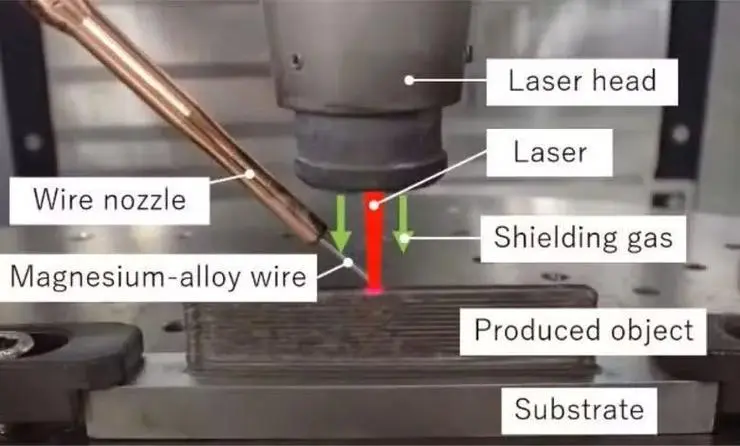
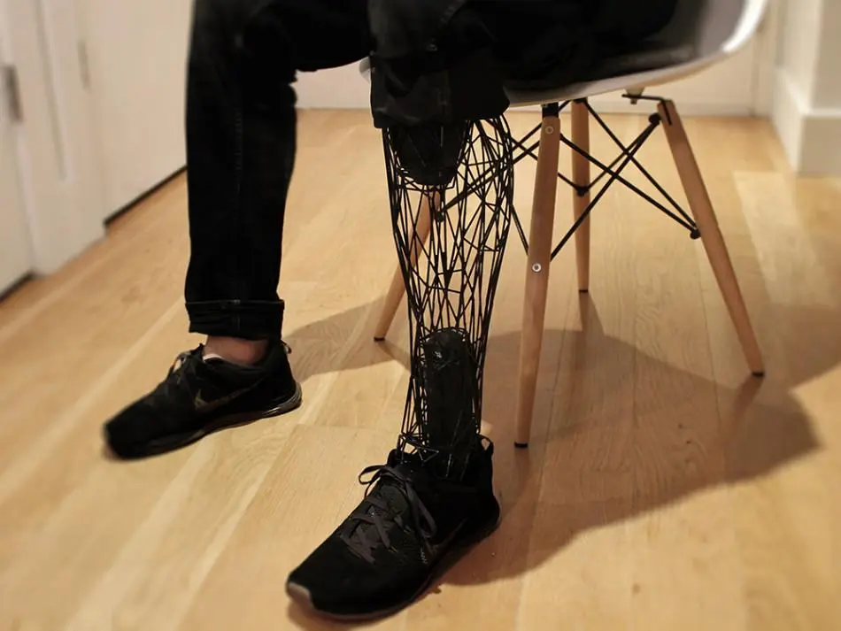
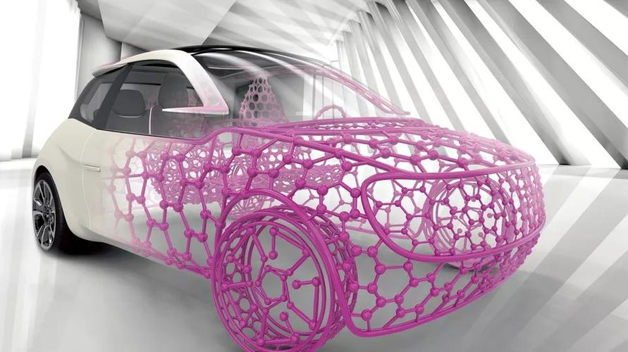

汉印SJF-P380丨汉印首创技术,精控成品品质：汉印新近推出的喷墨打印机V1,在使用 0.92英寸超大打印头提升打印速度的同时,还采用了专业图片优化的技术,外加四重色 控技术,以及前沿的智能防堵系统,能在保证打印色彩优质的同时又能防止墨水堵塞、 晕染等问题。
3D打印机新应用
紧急救灾：3D打印机可以生产关键物资，包括医疗设备、临时避难所甚至 食物。这种现场生产能力可以彻底改变救灾工作，快速提供援助，挽救生 命并将损失降至最低。
个性化食品制作：D打印机可以根据设计者的指令，逐层打印出具有独特 形状的美食。人们可以选择更多的食材和创意组合，创造出口感更为独特 的美食，丰富了食物的营养价值，并给人们带来愉悦的用餐体验，成为个 性化饮食的潮流引领者。
高性能航空航天零件制造：例如，聚醚醚酮具有出色的机械和耐热性能， 广泛应用于航空航天、汽车、医疗器械等领域。通过3D打印技术可以制造出 这种材料的复杂形状零件，如涡轮叶片、发动机部件等。此外，难以用传统加 工技术加工的航空航天新材料如碳纤维复合材料，通过3D打印可以实现复杂部 件的整体成型，大大缩短生产流程。
解剖结构模型制作在外科手术准备领域：医疗专业人员现在可以通过3D打印技 术创建患者解剖结构的精确模型，以更好地规划复杂的手术过程。通过3D打印 技术，可以准确复制出心脏等复杂解剖结构，为手术的精确性、风险降低和恢复 时间缩短提供支持，开启个性化医疗的新时代。
牙科植入物和假肢制造：学家现在可以利用3D打印技术制造高度个性化和复杂 的牙科植入物和假肢。外科医生可以设计和打印针对患者的植入物，从牙冠到髋 关节和膝关节，满足不同个体的需求。
解剖结构模型制作在外科手术准备领域：医疗专业人员现在可以通过3D打印技 术创建患者解剖结构的精确模型，以更好地规划复杂的手术过程。通过3D打印 技术，可以准确复制出心脏等复杂解剖结构，为手术的精确性、风险降低和恢复 时间缩短提供支持，开启个性化医疗的新时代。
牙科植入物和假肢制造：学家现在可以利用3D打印技术制造高度个性化和复杂 的牙科植入物和假肢。外科医生可以设计和打印针对患者的植入物，从牙冠到髋 关节和膝关节，满足不同个体的需求。
3D打印机所需材料
工程塑料： 作为当前应用最广泛的一类3D打印材料，工程塑料占商用3D打印材料的90%以上，应用于FDM设备，是强度、耐冲击性、耐热性、硬度及抗老化性均优的塑料。主要包括热塑性材料和热固性材料。目前常见的工程塑 料主要有ABS,PC,PA。3D打印机机器分类
光固化3D打印机：光固化3D打印则是利用特定光源照射液态光敏物质，使其发生化学反应从而固化。 光固化打印通过照射光敏树脂的方式进行固化，其固化速度较快，可以实现较高的打印速度。而传统3D打印需要将材 料逐层叠加固化，因此速度较慢。其出色的打印精度和材料多样性使其在医疗领域、珠宝设计、模型制作等领域有着 广泛的应用。
熔融沉积式3D打印机：熔融沉积式3D打印机是通过将塑料丝加热至熔融状态，然后通过喷嘴将熔融的塑料挤出，层层 堆积形成3D模型。这种打印机的优点是操作简单、成本低廉，适合打印大尺寸、结构简单的物品。

粉末烧结式3D打印机： 粉末烧结式3D打印机是将粉末状的塑料、金属等材料逐层铺平，通过激光器照射使材料局部 熔化，最终形成完整的3D模型。这种打印机的优点是可以打印大型、复杂的物品，且可以重复使用剩余的粉末材料。
arduino uno r3 开发板：帮助我们通过编程控制外部设备。
寻找新的研究和应用
3D打印技术在近年来取得了显著的研究进展和广泛的应用，以下是一些新的研究和应用的具体例子：
新的研究
1.镁合金丝材DED激光金属3D打印技术:
-
三菱电机公司、熊本大学镁研究中心（MRC）、东邦金属株式会社和日本宇宙航空研究开发机构（JAXA）联合开发了首个采用定向能量沉积（DED）方法使用镁合金进行高精度增材制造的激光丝材金属3D打印机。使用MySensors可以构建智能家居系统,通过传感器节点监测和控制家庭中的温度、湿度、光照等环境参数，实现自动化控制，如智能灯光控制、温度调节、安防监控等。
该技术能够生产比铁或铝制成的部件更轻、更坚固的火箭、汽车和飞机部件，提高燃油效率，降低生产成本。

2.光致发光材料的3D打印
-
中美两国三院院士杨培东团队在光致发光领域取得突破，借助3D打印技术制备了光致发光结构。
-
研究发表在2024年第一篇Science文章上，标题为“Supramolecular assembly of blue and green halide perovskites with near-unity photoluminescence”。
-
该研究制备了具有更高转换效率的光致发光材料，并借助3D打印制造立体结构，进一步延伸了应用。
新的应用
1.航空和航天领域
-
以色列和以色列航空公司使用3D打印技术制造飞机零件，这些零件比传统制造出的更轻、更强，并降低了生产成本和时间。
-
SpaceX和NASA等航天机构正在使用3D打印技术制造火箭发动机和其他关键组件，以降低成本并加快生产。
2.医疗领域
-
定制化假肢：通过3D打印技术打印出与病人残肢精确匹配的假肢，提高了假肢的舒适度和功能性。
-
生物打印：利用患者自身的细胞来打印出活体组织，未来有望实现器官的打印。
-
打印药物：如FDA批准的3D打印药物Spritam，为药物的定制化和复杂度提供了新方案。

制造业领域
-
快速原型制作：汽车公司利用3D打印制造原型零件，加速产品开发过程，并降低了制造成本。
-
定制化生产：如宾利和劳斯莱斯等汽车制造商正在提供定制化的零部件服务，通过3D打印来满足客户的个性化需求。

尝试阅读gcode
三菱电机公司、熊本大学镁研究中心（MRC）、东邦金属株式会社和日本宇宙航空研究开发机构（JAXA）联合开发了首个采用定向能量沉积（DED）方法使用镁合金进行高精度增材制造的激光丝材金属3D打印机。使用MySensors可以构建智能家居系统,通过传感器节点监测和控制家庭中的温度、湿度、光照等环境参数，实现自动化控制，如智能灯光控制、温度调节、安防监控等。
该技术能够生产比铁或铝制成的部件更轻、更坚固的火箭、汽车和飞机部件，提高燃油效率，降低生产成本。
2.光致发光材料的3D打印
中美两国三院院士杨培东团队在光致发光领域取得突破，借助3D打印技术制备了光致发光结构。
研究发表在2024年第一篇Science文章上，标题为“Supramolecular assembly of blue and green halide perovskites with near-unity photoluminescence”。
该研究制备了具有更高转换效率的光致发光材料，并借助3D打印制造立体结构，进一步延伸了应用。
新的应用
1.航空和航天领域
以色列和以色列航空公司使用3D打印技术制造飞机零件，这些零件比传统制造出的更轻、更强，并降低了生产成本和时间。
SpaceX和NASA等航天机构正在使用3D打印技术制造火箭发动机和其他关键组件，以降低成本并加快生产。
2.医疗领域
定制化假肢：通过3D打印技术打印出与病人残肢精确匹配的假肢，提高了假肢的舒适度和功能性。
生物打印：利用患者自身的细胞来打印出活体组织，未来有望实现器官的打印。
打印药物：如FDA批准的3D打印药物Spritam，为药物的定制化和复杂度提供了新方案。
制造业领域
快速原型制作：汽车公司利用3D打印制造原型零件，加速产品开发过程，并降低了制造成本。
定制化生产：如宾利和劳斯莱斯等汽车制造商正在提供定制化的零部件服务，通过3D打印来满足客户的个性化需求。